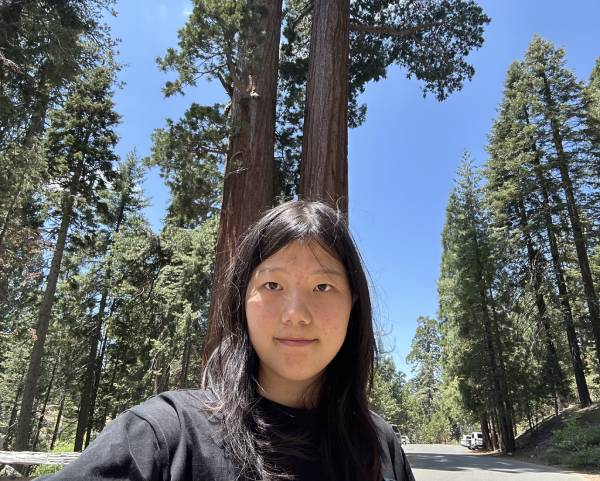

I am Xi Zhao, a freelance multimedia writer based in New York. Drawing from backgrounds in philosophy and computer science, I create narratives shaped by interdisciplinary perspectives. My work spans fiction and nonfiction across multiple genres and mediums. I’m available for commissions, collaborations, and creative interpretations of personal stories.
Contact/Commission Me